出國旅遊的記帳與行程規劃 App。記一筆只要三步,收據拍照自動辨識,出發前做的功課也能一起帶著走。
卡溜趴以「旅程」為單位管理花費與行程。每趟旅程各自獨立,舊旅程永遠留著可以回顧。
所有資料(帳目、行程、照片)只存在這支手機裡,不上傳雲端,也不需要網路。在國外沒有網路時,記帳、拍照、收據辨識都能正常使用。
| 名詞 | 意思 |
|---|---|
| 旅程 | 一趟旅行,例如「東京美食之旅」。有起訖日期、成員、預算。 |
| 支出 | 一筆花費。有名稱、金額、幣別、匯率、分類、付款方式、日期時間,最多 3 張照片。 |
| 行程 | 想去的地方或活動。可以排在某一天,或先放在「待排」。 |
| 待排 | 還沒決定哪一天去的行程清單。 |
| 預設匯率 | 這趟旅程某個外幣的匯率,記帳時自動帶入,每筆仍可個別修改。 |
直接安裝新的 APK 即可覆蓋舊版,已記的資料會保留。App 會自動升級資料格式。
每一版都用同一把「簽章金鑰」簽署,所以能直接覆蓋。如果手機出現「與已安裝的應用程式衝突」,代表簽章不同,不要先移除舊版,先備份再詢問作者。
| 項目 | 說明 |
|---|---|
| 相機 | 使用手機內建相機 App 拍照,卡溜趴本身不要求相機權限。 |
| 相簿 | 使用系統的照片選擇器,只會讀取你選的那張照片。 |
| 存到相簿 | 回憶照片會存到相簿的「卡溜趴」資料夾,Android 10 以上不需額外權限。 |
| 網路 | 不需要。 |
在旅程列表按「新增旅程」(或右上角的「+」),填好後按右上角的 ✓。建立後會直接進入這趟旅程。
| 欄位 | 說明 |
|---|---|
| 封面 | 不選照片時,會依旅程名稱自動畫一張插畫:名稱裡的季節或主題(賞楓、賞櫻、滑雪、海島、美食…)決定畫面,地名(首爾、東京、京都、大阪、台北、曼谷、巴黎…)會加上地標;沒寫季節時依出發月份自動選。封面下方的「封面插畫」可以手動挑選秋楓、櫻花、雪景、海島、美食、城市或旅行,選「自動」則恢復自動判斷。想用自己的照片,點封面從相簿選;之後想換回插畫,按「不用照片,改用插畫」。 |
| 旅程名稱 | 例如「東京美食之旅」。必填。 |
| 出發/回程 | 分別點兩格選日期。回程不能早於出發;改出發日時,天數會保持不變。 |
| 旅行成員 | 按「新增成員」輸入名字,用來算人均花費(之後的分帳也會用到)。 |
| 預設匯率 | 按「新增幣別」選外幣,輸入「1 外幣 = ? 新台幣」。可以不填,記第一筆該外幣時會自動記下。 |
| 預算 | 選填,以新台幣計算。填了之後會顯示使用百分比與剩餘金額。 |
| 分帳功能 | 與朋友旅遊時開啟。(結算功能將於之後版本提供) |
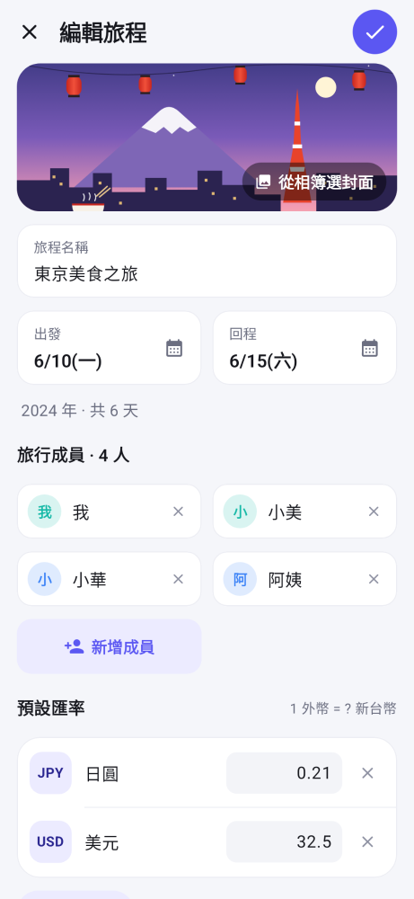
進入旅程後,下方有四個分頁,中間的大按鈕是「記一筆」。
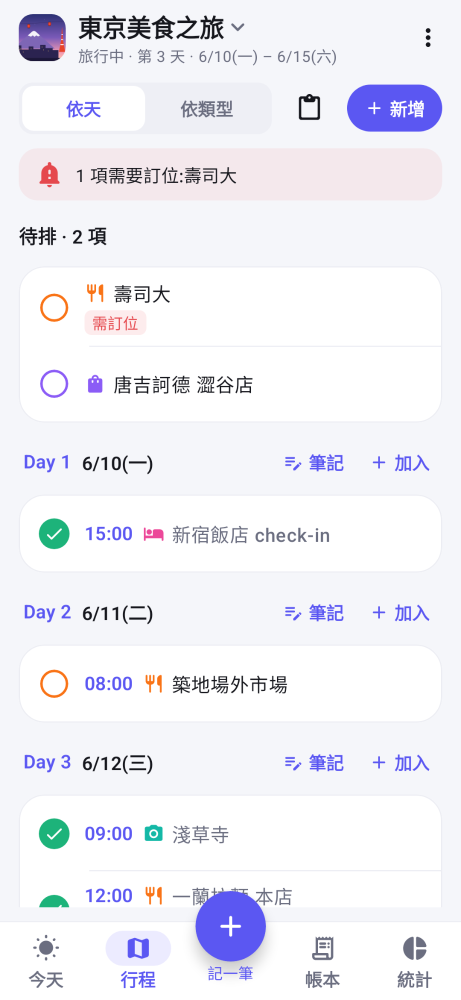
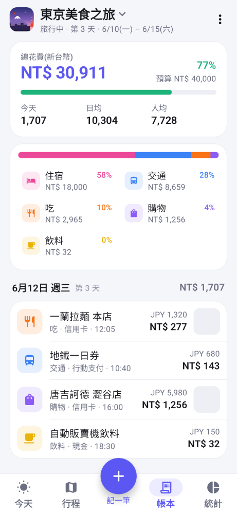
| 分頁 | 內容 |
|---|---|
| 今天 | 今天的行程與花費。出發前顯示倒數天數與還沒訂位的項目。(第 8 章) |
| 行程 | 所有行程,可依天或依類型檢視。(第 7 章) |
| 帳本 | 總花費、分類比例、每天的支出明細。(第 9 章) |
| 統計 | 圓環圖、每日長條圖、付款方式比例。(第 9 章) |
按下方中間的「＋ 記一筆」。一個畫面就完成,上半部填內容,下半部是計算機。
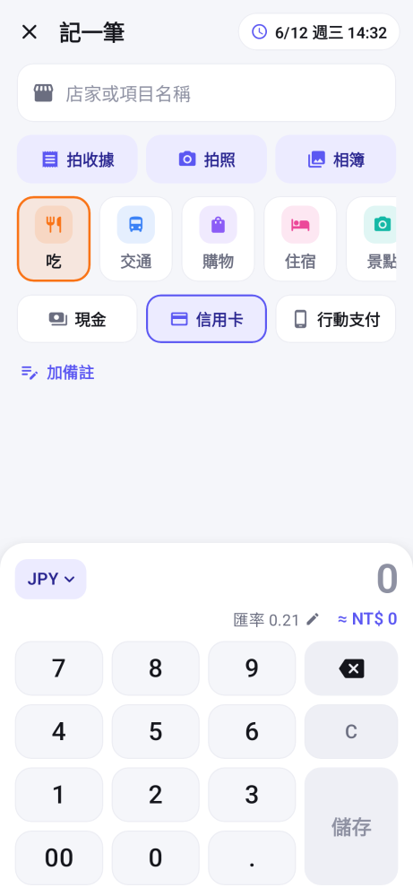
| 按鍵 | 功能 |
|---|---|
| JPY ▾ | 切換幣別。清單會列出這趟旅程用過的幣別,「其他幣別…」可選任何幣別。 |
| 匯率 0.21 ✎ | 顯示目前匯率與換算的新台幣金額。點一下可修改這一筆的匯率(例如刷卡的實際匯率)。 |
| 00 | 一次輸入兩個 0,輸入日圓、韓元時特別方便。 |
| ⌫ | 刪除一位;長按清除全部。 |
| C | 清除金額。 |
| 儲存 | 金額大於 0 且有匯率時才能按。 |
| 上方小橫槓 | 上下拖曳調整計算機大小:往上拉按鍵變大,往下推上面的名稱、照片、分類有更多空間。會記住你的設定。 |
在帳本或今天分頁點一筆支出即可修改。右上角垃圾桶可刪除,照片會一起刪除。
記一筆畫面名稱下方有三個按鈕,每筆最多 3 張照片。
| 按鈕 | 用途 | 存到手機相簿 |
|---|---|---|
| 拍收據 | 收據、發票。拍完自動辨識。 | 不存 |
| 拍照 | 餐廳、菜色、景點。看到照片就想得起這筆錢花在哪。不辨識。 | 存 |
| 相簿 | 選以前拍的照片,自動判斷是收據還是一般照片。 | — |
辨識在手機上離線進行,支援中文、日文、韓文、英文。讀到的全部文字會保存下來,之後可用來搜尋。
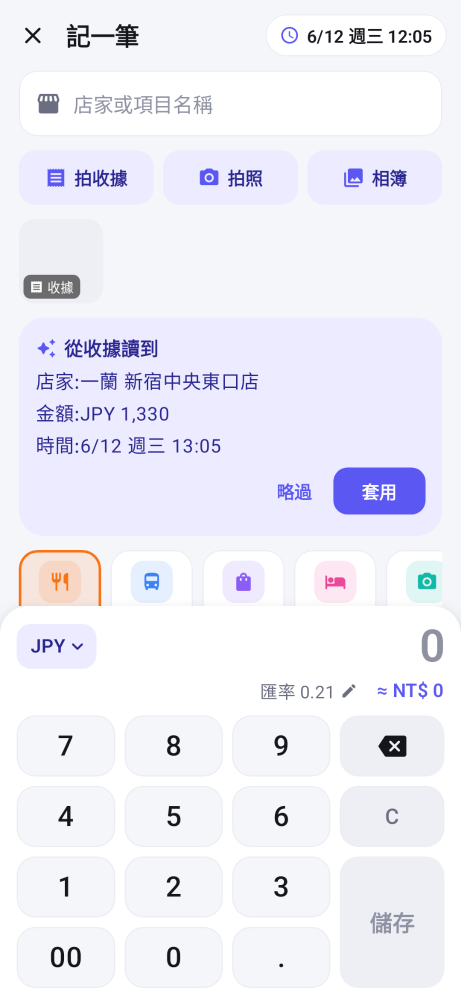
點照片縮圖可全螢幕檢視,左右滑動切換。下方可以:
有照片的支出,在帳本列表右側會顯示縮圖。
出發前做的功課放進卡溜趴:想去的景點、要訂位的餐廳。可以先丟進「待排」,之後再排到某一天。
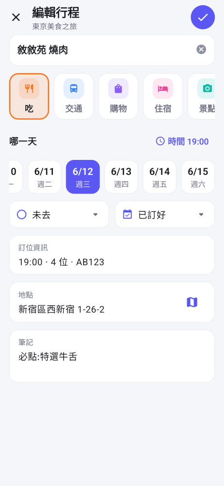
| 方式 | 做法 |
|---|---|
| 新增 | 行程分頁右上角「＋ 新增」,或某一天旁邊的「＋ 加入」(直接排到那天)。 |
| 貼上多筆 | 按剪貼簿圖示,貼上整理好的清單,一行一個(「A → B → C」也會拆開)。會自動去掉編號、符號,帶入時間(09:00、中午、下午3點…),並猜分類。全部放進待排。 分類怎麼猜:你自己寫的標籤最優先,例如「【交通】」「[吃]」「住宿:」或 🚇🍜🏨🛍📷 這類圖示;其次「搭乘、步行、前往、轉乘」這類移動的字算交通;最後才看關鍵字(「拉麵」→吃、「寺」→景點、「飯店」→住宿、「市場」→購物)。 |
| 把筆記拆成多個行程 | 如果你把一整天寫在一個行程的筆記裡(例如「第三天行程」),點開它,按筆記下方的「把筆記拆成多個行程」。會先列出預覽:每行一個行程、時間、猜的分類;猜不到的標「未分類」,點一下可選;不是地點的行(例如「記得帶護照」)取消勾選。按「建立」後排在同一天;原本那段筆記一字不漏移到那天的「當日筆記」,方便對照。拆錯了,馬上按畫面下方的「復原」就回到拆之前。 |
| 從 Google 地圖分享 | 在 Google 地圖打開一個地點 → 按「分享」→ 選「卡溜趴」。名稱和地圖連結自動帶入,加到目前旅程。 |
| 欄位 | 說明 |
|---|---|
| 名稱、分類 | 名稱字多時自動變兩行,也可以按 Enter 換行。分類與記帳共用,所以從行程記帳時分類會自動對上。 |
| 哪一天 | 一排方形日期格子(日期下面是星期),往右滑看其他天;第一格是「待排」。「加時間」可指定時間。 |
| 狀態、訂位 | 同一行的兩個小選單:未去/已去/跳過;不用訂位/需要訂位/已訂好。已訂好可填訂位時間、人數、確認編號。 |
| 地點 | 地址或 Google 地圖連結。右邊的地圖鈕可直接開地圖。 |
| 筆記 | 必點菜色、營業時間、注意事項…先留兩行,字多會自動長高。 |
| 截圖/圖片 | 在最下面:從相簿選菜單、營業時間、路線的截圖,最多 9 張。點行程時看得到,點圖可以放大。分享給同伴和備份時都會一起帶過去。 |
點一個行程會先打開行程內容:時間、分類、狀態、訂位、地點、已花多少、筆記(網址和電話直接點),以及為它記過的帳。右上角 ✏️ 編輯、🗑 刪除(會再確認)。下方是常用按鈕:「為這個行程記一筆」「標記已去/改回未去」「導航」。新增行程則直接進編輯畫面。
在「編輯旅程 → 導航軟體」選:每次詢問、Google 地圖、Naver Map、KakaoMap。整趟旅程的「導航」都會用它。韓國建議 Naver Map 或 KakaoMap(大眾運輸和步行路線比較準;它們會用地點名稱搜尋)。手機沒裝選的 App 時,會自動改用其他地圖。
每一天可以寫一段「當日筆記」(例如「今天早點出門」「記得帶護照」):在 Day 標題右邊按筆記圖示。筆記顯示在那天標題下面,點一下展開或收起,鉛筆圖示可修改;清空就刪除。「今天」分頁最上面也會顯示今天的筆記。拆分行程時,原本的筆記也會放在這裡。
需訂位 還沒訂,行程頁上方也會有紅色提醒。 已訂 19:00 4位 已訂好。 左邊的圓圈點一下可打勾(已去),再點一下取消。
在行程的「記一筆」按鈕(今天分頁),或編輯行程頁的「為這個行程記一筆」,會開啟記一筆並帶好名稱與分類。儲存後該行程自動打勾,旁邊顯示「已花 NT$ …」。
「今天」分頁會依旅程的階段顯示不同內容。
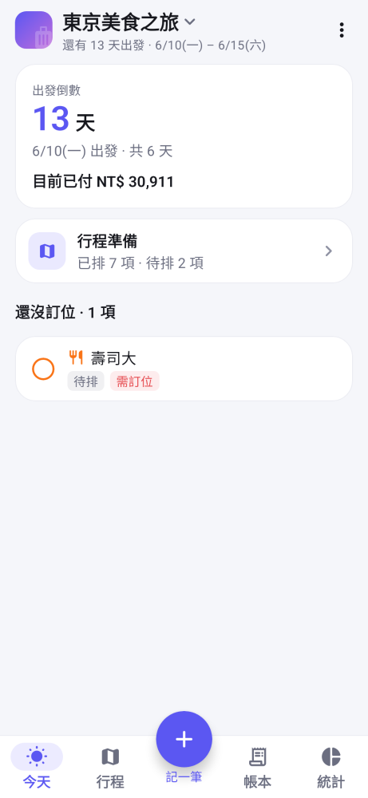
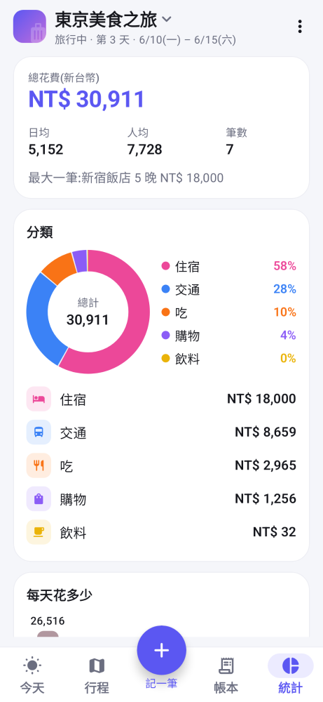
從旅程畫面點左上角的旅程名稱進入。
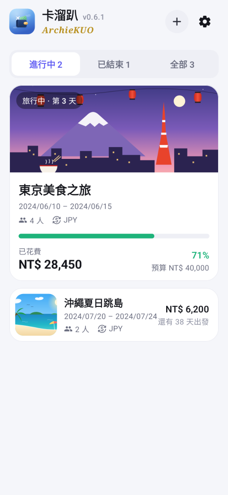
| 項目 | 說明 |
|---|---|
| 外觀 | 跟隨系統/淺色/深色。 |
| 字體大小 | 標準/大/特大,會在手機系統字型大小上再放大。建議先用手機「設定 → 顯示 → 字型大小」調整,覺得不夠再調這裡。 |
| 照片 | 「回憶照片自動存到相簿」,預設開啟;收據不會存到相簿。 |
| 分類管理 | 新增、改名、排序、刪除,可自訂圖示(20 種)與顏色(10 色)。刪除分類時,原本的支出會改歸「其他」;「其他」不能刪。 |
| 付款方式管理 | 新增、改名、排序、刪除。 |
| 我的名字 | 分享旅程給同伴時顯示,例如「小明 分享」。 |
| 備份全部資料 | 所有旅程存成一個檔案,可選含不含照片(見第 12 章)。 |
| 從檔案還原或匯入 | 選擇備份檔或同伴分享的旅程檔。 |
| 關於 | 結算幣別(新台幣)、版本、作者。 |
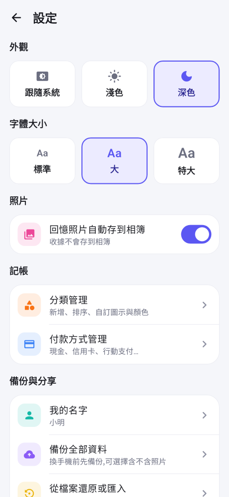
兩件事用的是同一種檔案(.zip):備份是給自己換手機用,分享是一趟旅程給同伴看。都不需要網路帳號。
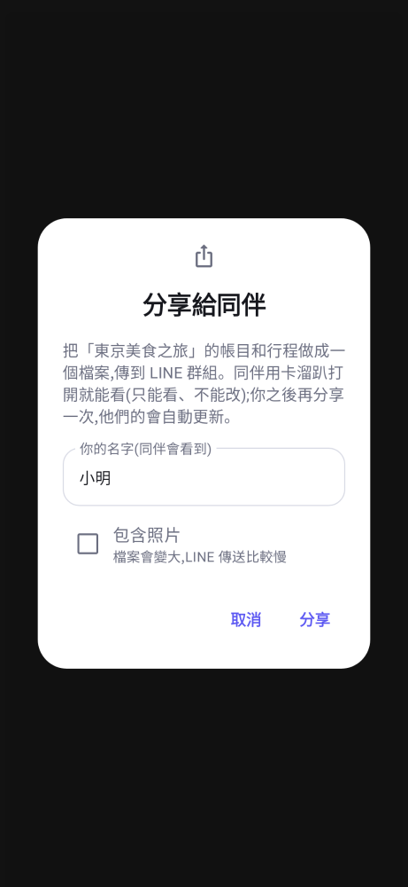
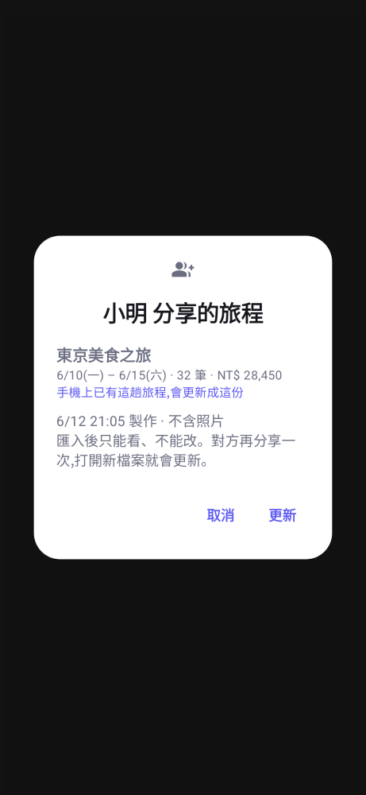
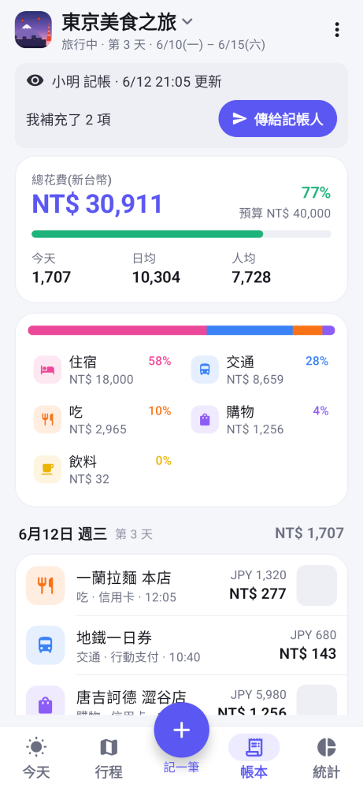
同伴想到漏記的帳,或想去的地方,也可以自己加,不會弄亂記帳人的帳:
沒有人補充時,一切跟原本一樣:不會多出任何檔案或步驟。同一個補充檔打開兩次,也不會重複加入。
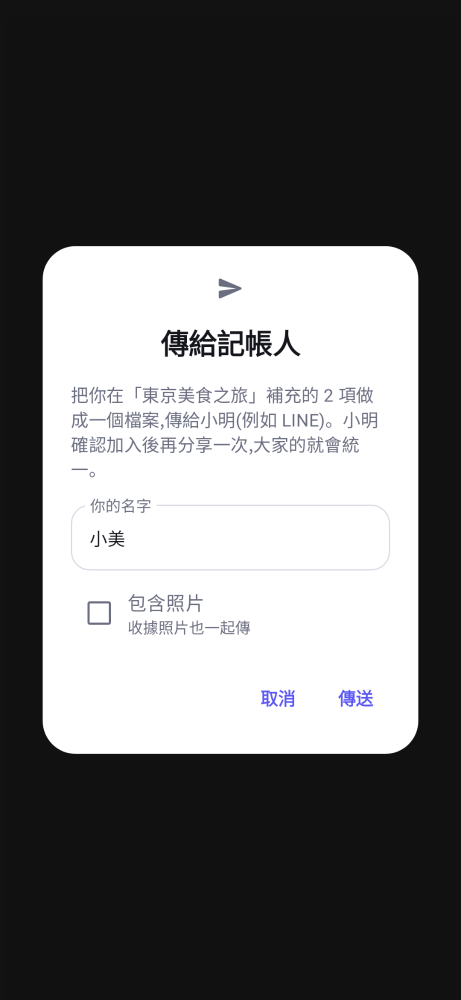
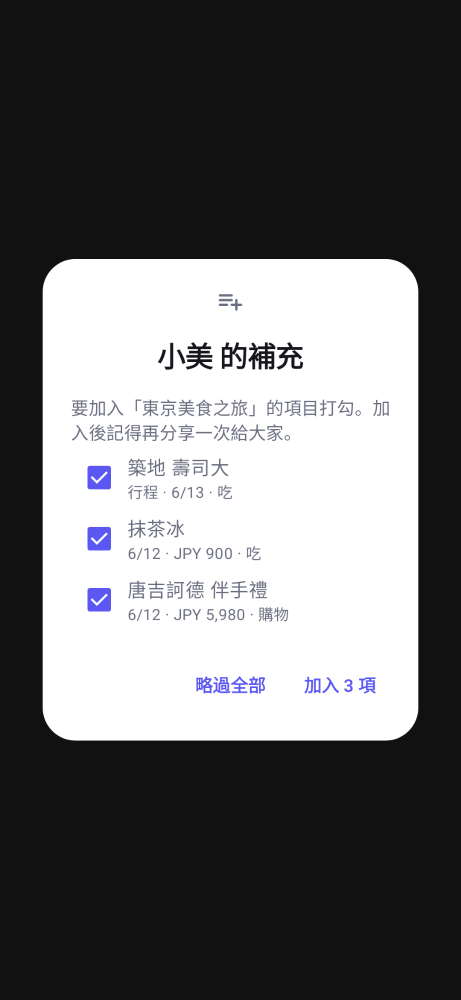
檔名像「卡溜趴備份-2026-10-09.zip」。
旅程結束提醒:你自己的旅程結束後,旅程列表最上面會提醒「某某旅程結束了」,按「備份」直接備份,按「稍後」先不管(下一趟結束時會再提醒)。
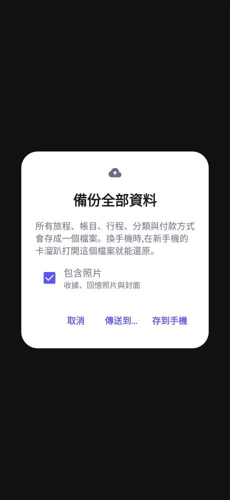
在家用電腦大螢幕排行程,排好傳到手機。這是一個網頁檔「卡溜趴行程桌.html」,用 Chrome 或 Edge 打開就能用,不用安裝、不用網路。這裡只有行程,沒有記帳。
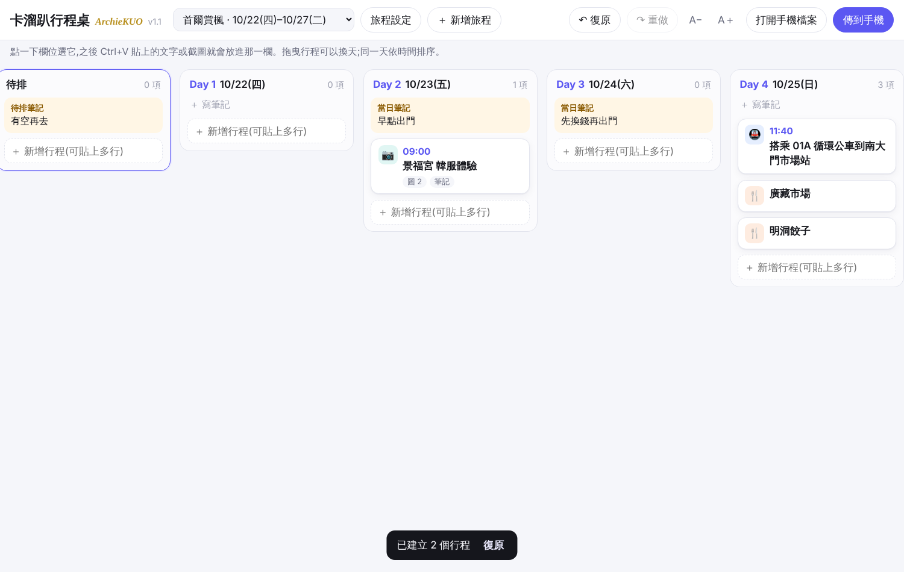
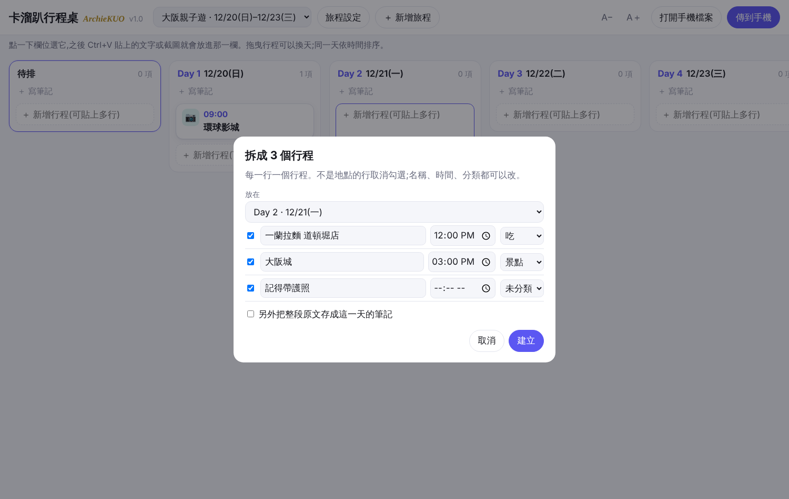
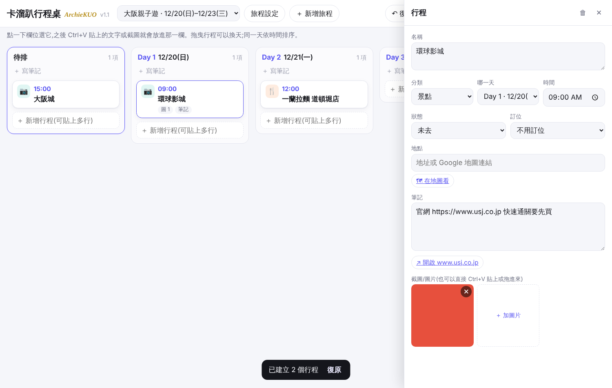
| 問題 | 回答 |
|---|---|
| 刷卡匯率跟預設不一樣? | 在記一筆的計算機上點「匯率 ✎」修改這一筆即可,不影響其他筆。要改之後的預設值,到「編輯旅程 → 預設匯率」。 |
| 改了預設匯率,舊的帳會變嗎? | 不會。每筆支出記錄當時的匯率,只有之後新增的支出會用新的預設值。 |
| 機票在出發前就付了怎麼記? | 記一筆時把日期改成實際付款日即可,帳本會標示「出發前」,統計也會另列。 |
| 收據辨識不準? | 按「略過」自己輸入即可,照片仍會保存。可把收據照片回報給作者改進。 |
| 分享選單找不到卡溜趴? | 在 Google 地圖的分享選單往右滑或按「更多」,找「卡溜趴」或「加入卡溜趴行程」。 |
| 字太小? | 到手機「設定 → 顯示 → 字型大小」調大,或卡溜趴「設定 → 字體大小」選「大」或「特大」。 |
| 照片存在哪? | App 內部儲存空間,收據與回憶分開存放。回憶照片另外存一份在手機相簿的「卡溜趴」資料夾。 |
| 刪除旅程會怎樣? | 該旅程的所有支出、行程、App 內的照片都會刪除,無法復原。已存到手機相簿的照片不受影響。 |
| 換手機怎麼辦? | 舊手機「設定 → 備份全部資料」(含照片),傳到 LINE Keep 或雲端硬碟;新手機安裝卡溜趴後打開這個檔案還原。 |
| 同伴可以一起記帳嗎? | 可以補充:同伴記的先算「我的補充」,傳給記帳人審核加入後,再分享一次大家就統一了(見第 12 章)。 |
| 同伴打開說「是你自己記的旅程」? | 這是你自己分享出去的檔案,傳回自己手機不需要匯入,原本的旅程不受影響。 |
| LINE 點檔案沒有出現卡溜趴? | 在 LINE 檔案畫面按右上角「⋯」或分享鈕,選「用其他應用程式開啟」;或先存到手機,再從卡溜趴「設定 → 從檔案還原或匯入」選擇。 |
| 版本 | 內容 |
|---|---|
| v0.10.1 | 匯入或還原成功後自動刪除原本的檔案(從 LINE 打開的除外)。 |
| v0.10.0 | 新增電腦行程桌(網頁,不用安裝);行程可以附截圖;手機「傳到電腦排行程」與「併入」電腦排的行程。 |
| v0.9.3 | 筆記放回編輯行程的最下面。 |
| v0.9.2 | 編輯行程:名稱可兩行、可換行;筆記先留兩行、字多自動長高;拿掉「預估花費」(行程上改看實際「已花」)。 |
| v0.9.1 | 每趟旅程可選導航軟體(Google 地圖/Naver Map/KakaoMap);分類優先照你寫的標籤(【交通】等)與「搭乘、步行」;修正大字體時按鈕文字被切到、頭像與日期擠壓;自動檢查改用更大的字體並偵測文字被切到。 |
| v0.9.0 | 點行程先看內容,編輯和刪除改成右上角圖示;新增「當日筆記」;拆分筆記後原筆記保留在當日筆記,並可「復原」。 |
| v0.8.1 | 修正:編輯畫面裡的網址和電話直接點就能開(之前只能按下方按鈕);新增「把筆記拆成多個行程」;貼上多筆會帶入時間;記一筆的計算機可拖曳調整大小。 |
| v0.8.0 | 網址和電話可以點;同伴補充 → 傳給記帳人審核 → 再分享統一;旅程結束提醒備份、還原前若手機較新會警告;編輯行程改成一排可左右滑的方形日期格子,狀態和訂位合併一行;首頁小卡片排版修正,所有畫面在最大字體下不再出現直排(新增自動檢查)。 |
| v0.7.1 | App 改名為「卡溜趴」(原「旅帳」),資料與覆蓋安裝不受影響;之後存到相簿的照片放在「卡溜趴」資料夾。 |
| v0.7.0 | 分享給同伴(用 LINE 傳旅程檔,同伴匯入後唯讀,再分享會更新);備份全部資料與還原(可選含照片);設定「我的名字」;正式簽章金鑰。 |
| v0.6.1 | 編輯旅程時可手動挑選封面插畫;照片封面可改回插畫。 |
| v0.6.0 | 旅程封面自動插畫:依名稱的主題與地點產生(秋楓、櫻花、雪景、海島、美食、城市),不需網路。 |
| v0.5.2 | 旅程列表標題改用新圖示,作者簽名移到第二行,大字體時不會被截斷。 |
| v0.5.1 | 新桌面圖示(錢包、飛機與鈔票);輸入名稱後按鍵盤「完成」直接回到計算機;加入完整的自動化測試(資料流程、資料庫升級、畫面操作)。 |
| v0.5.0 | 行程規劃(今天/行程/帳本/統計分頁、待排、訂位、Google 地圖分享、為行程記一筆)、統計圖表、三個拍照按鈕、出發/回程分開選、新桌面圖示、標題顯示版本與作者。 |
| v0.4.0 | 一頁式記一筆(名稱提示、日期時間、半螢幕計算機)、收據離線辨識、照片、直接開啟進行中旅程、字體大小設定。 |
| v0.3.0 | 全新介面設計、淺色/深色模式、旅程封面、自訂分類圖示與顏色。 |
| v0.2.0 | 記帳、幣別與匯率、分類與付款方式管理。 |
| v0.1.0 | 建立、編輯、刪除旅程。 |
卡溜趴 · 作者 ArchieKUO